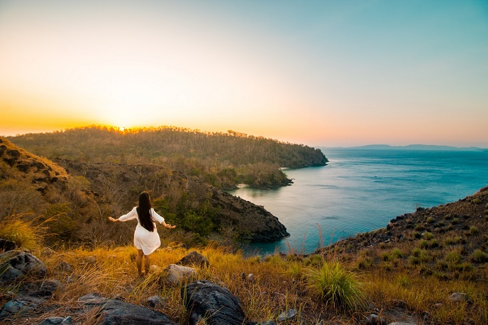
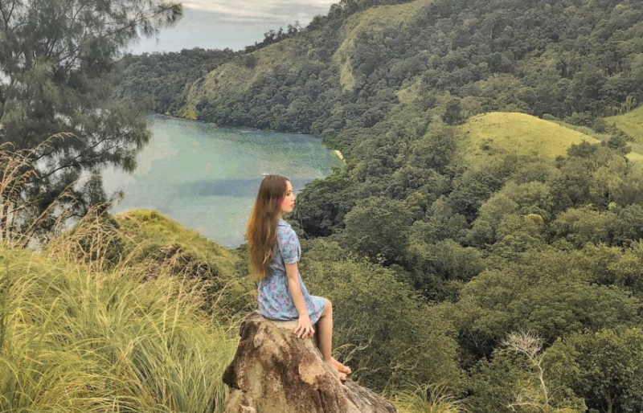
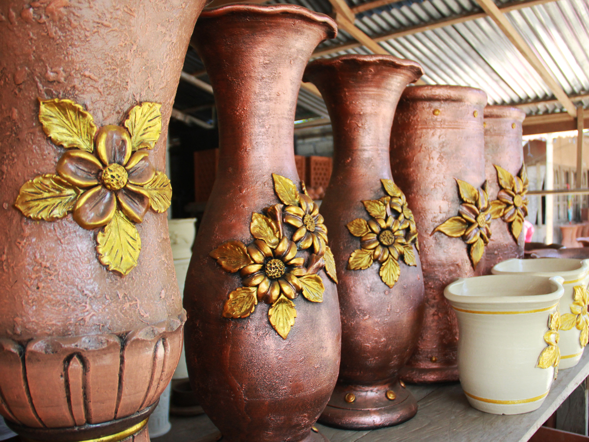
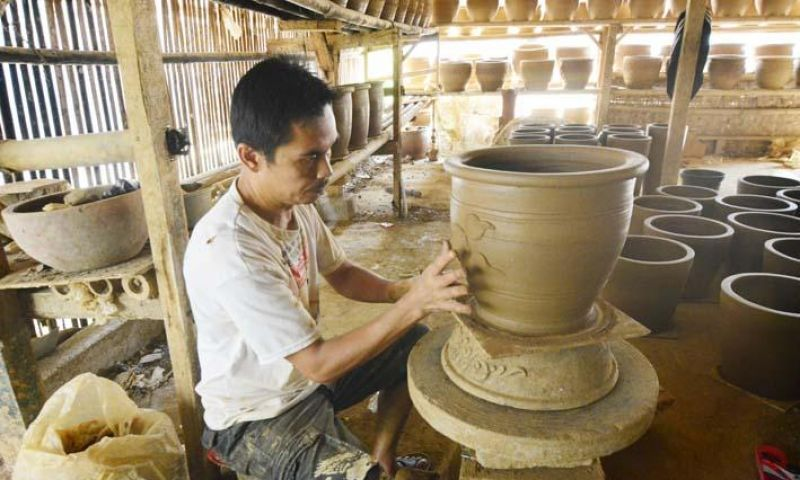
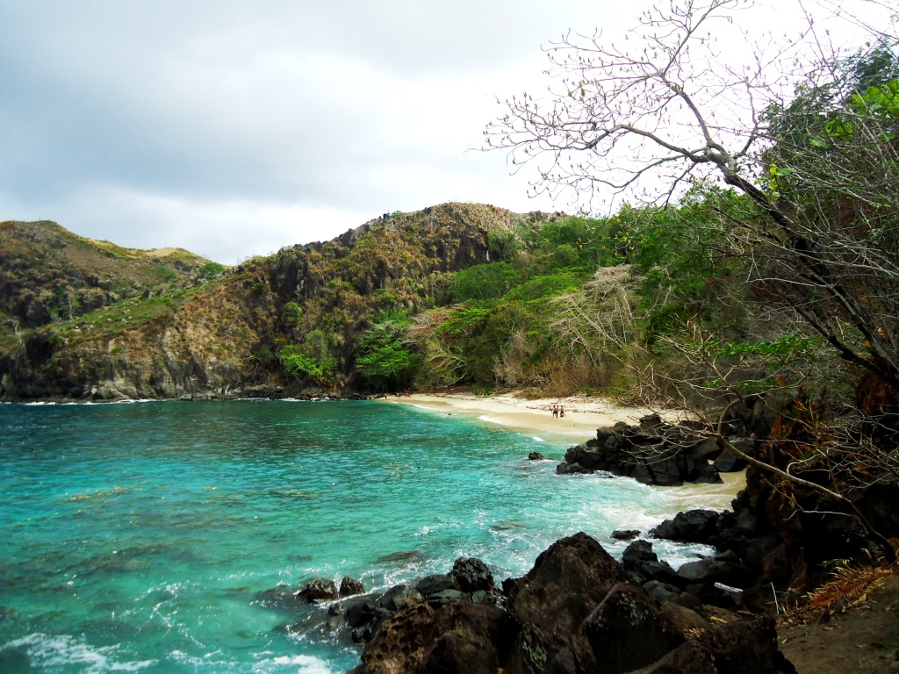
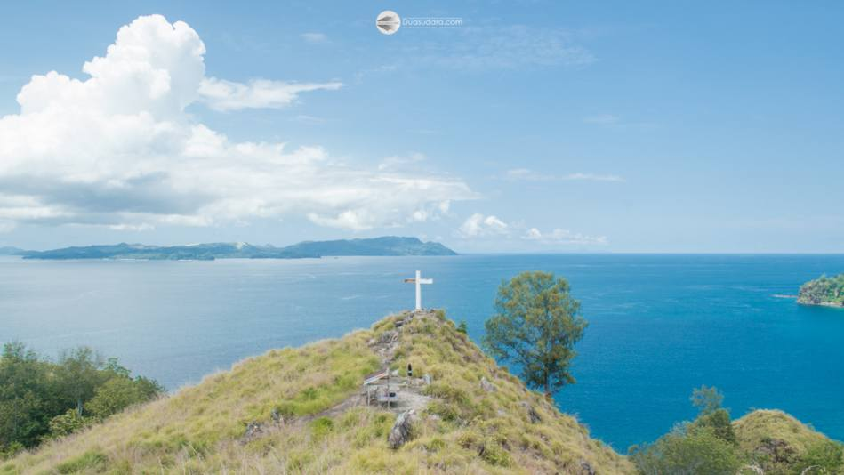
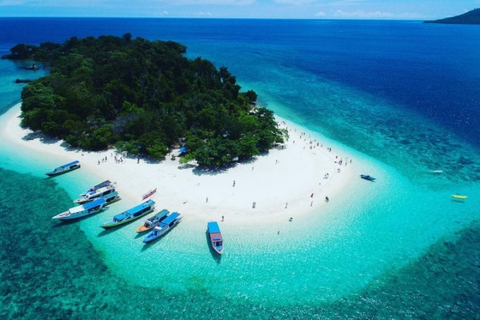
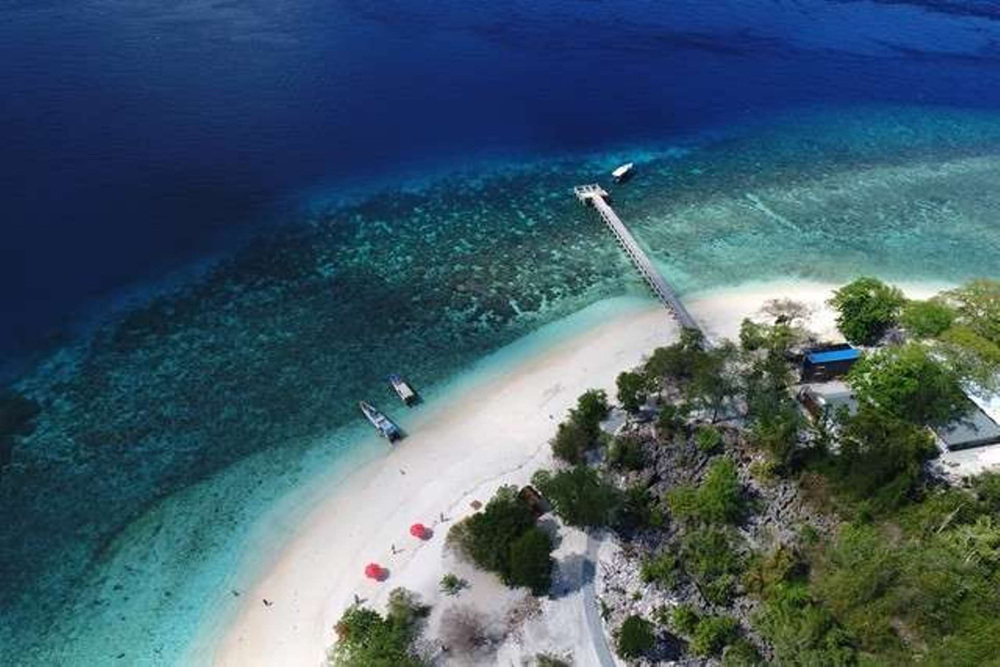

Sulawesi Utara
Sulawesi Utara memiliki kepulauan dengan jumlah pulau sebanyak 287 pulau dengan 59 di antaranya berpenghuni. Wilayah administratif Sulawesi Utara terbagi menjadi 4 kota dan 11 kabupaten dengan 1.664 desa/kelurahan. Sulawesi Utara terbagi menjadi dua zona yaitu zona selatan yang berupa dataran rendah dan dataran tinggi serta zona utara yang meliputi kepulauan. Zona ekonomi eksklusif Sulawesi Utara mencapai 190.000 km2 dengan pesisir pantai sepanjang 2.395,99 km dan luas hutan mencapai 701. 885 hektare. Wilayah Sulawesi Utara juga memiliki banyak gunung berapi, dikarenakan letaknya yang berada di tepian Lempeng Sunda.
| Likupang merupakan salah satu hidden gem di Sulawesi Utara berlokasi di Kabupaten Minahasa Utara yang mulai diminati oleh para traveler. Salah satu destinasi di Likupang yang dikunjung adalah Bukit Larata yang berlokasi di Desa Kinunang. Bukit Larata sendiri merupakan sisa-sisa gunung api purbakala yang kini sudah tak lagi aktif. Mengunjungi hidden gem satu ini, kamu bisa menikmati tenangnya padang ilalang serta menikmati pemandangan lautan lepas yang indah dari ketinggian. Dari puncak bukit ini, kamu juga bisa melihat indahnya pulau-pulau dari kejauhan melengkapi panorama alam yang menjadi daya tarik utama dari Bukit Larata. | Bukit Larata |


|
|


|
Desa Pulutan dan Industri Keramiknya | Ke arah selatan dari Kota Manado dengan menempuh jarak sekitar 40 km, kita akan menjumpai sebuah desa wisata yang sebagian besar penduduknya berprofesi sebagai pengrajin keramik. Di Desa Pulutan kamu bisa menemukan sentra industri keramik yang populer di Minahasa. Masyarakat di desa ini sangat piawai dalam menyulap gerabah menjadi berbagai produk keramik seperti guci, vas, lampu taman, kendi, dan berbagai produk keramik lainnya. Dalam sehari, rata-rata para pengrajin keramik Desa Pulutan bisa menghasilkan sekitar 50 keramik ukuran kecil atau 10 keramik ukuran sedang. Sedangkan keramik dalam ukuran besar bisa menghabiskan waktu pembuatan lebih dari satu hari. Harga yang ditawarkan sangat terjangkau, disesuaikan dengan ukuran dan kerumitan yang ada pada motif keramik. Keramik ukuran kecil dibanderol dengan harga Rp 150.000, dan keramik yang paling mahal harganya bisa mencapai lebih dari Rp.2.500.000 . |
| Pantai Pulisan merupakan sebuah wilayah pantai yang baru-baru ini populer diperbincangkan oleh masyarakat umum. Pantai cantik ini berlokasi di Desa Pulisan Kabupaten Minahasa Utara (Minut), Sulawesi Utara. Pantai ini memiliki tiga bagian yang dipisahkan oleh tebing batu menjorok ke laut. Tebing batu ini pun ada yang membentuk menyerupai gua dekat pantai, dan menjadi tempat favorit turis yang melancong. Pantainya pun memiliki hamparan pasir putih yang memesona. Lalu ada Bukit Pulisan yang masih satu lokasi dengan Pantai Pulisan. Bukit ini menyajikan pemandangan padang rumput yang luas berpadu dengan laut biru yang indah. Kamu yang suka mendaki, pasti akan menyukai destinasi ini, Bela. Area pendakian masih terbilang cukup menantang. Namun setelah berjalan selama satu jam, lelahmu akan terbayarkan dengan panorama yang nggak bisa dinikmati di mana pun. | Pantai Pulisan dan Bukit Pulisan |


|
|


|
Pulau Lihaga | objek wisata yang masuk wilayah kabupaten Minahasa Utara, Sulawesi Utara ini memang menyimpan pemandangan menakjubkan yang belum banyak diketahui wisatawan. Memiliki luas sekitar 8 hektar, pulau Lihaga merupakan pulau tak berpenghuni. Lihaga punya garis pantai dengan pasir putih yang begitu lembut dan air laut yang sangat jernih. Meski tidak berpenghuni, pulau Lihaga sudah menyediakan fasilitas toilet yang memadai. Kamu juga diizinkan untuk bermalam di Lihaga dengan membawa perlengkapan camping sendiri. Dengan air laut sebening kristal, kamu dapat snorkeling ataupun diving di perairan sekitar pulau Lihaga. |